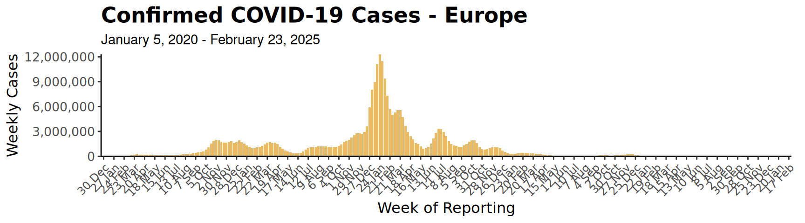
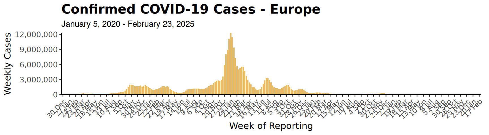

After installing SaviR, you are ready to use the following functions to read in the data and create visualizations. There are functions to create plots, maps, or tables by World Health Organization (WHO) Region, Department of State (DoS) Region, or globally.
Data: The Frankenstein Dataset
onetable - stored metadata with iso2 and iso3 codes,
country names, WHO/DoS/World Bank regions, and UN population
estimatesget_covid_df(sources = c("all", "WHO", "WHO+JHU", "WHO+Primary"))
- COVID cases/deaths dataframe from WHO and other sources.
calc_add_risk() - Add risk matrix calculations to dataframe
(df)get_vax() - Get vaccination data from Our World In Data
(OWID)get_combined_table(type = c("WHO", "Both", "legacy"), geometry=FALSE)
- Combine all of the above into one large df, optionally add
geometry
This snippet produces the master df with all the variables required for all of the following graphics.
# Load in data to create visuals
df_who <- get_combined_table("WHO") # China includes Taiwan, Hong Kong, and Macau data
# Data for visuals are typically as of Sunday of the current week
# but this can be determined dynamically using WHO data.
sunday_date <- df_who |>
distinct(date, dow = weekdays(date)) |>
arrange(desc(date)) |>
filter(dow == "Sunday") |>
slice(1) |>
pull(date)Plots
plot_epicurve(df, transparent = T)
When creating epi curves for the WHO regions, the “plot_epicurve” function should take in the df with only “WHO” observations in order to match the same curve on the WHO Coronavirus Dashboard. The individual epi curves for each region can be run simply by filtering for one WHO region in the df. The function will detect that the region column has only one region and will produce the epi curve accordingly.
When creating epi curves for the DoS regions, the plot_epicurve function should take in the df with “Both” observations. Similarly to the WHO epi curves, individual epi curves can also be produce by filtering to one DoS region.
# Epi Curves for WHO -- Global
epi_curve_global <- plot_epicurve(df_who, transparent = T)
epi_curve_global
# Epi Curves for DoS -- Global
state_epi_curve <- plot_epicurve(filter(df_who, date <= sunday_date),
type = "cases",
by_cat = "State Region")
state_epi_curve
Inset plots
- We can also pass
inset = TRUEto plot an inset plot for the most recent weeks- By default, the inset for the case plot is slightly left and cener in the plot window
- Deaths plot inset is slightly up and to the right
- Looks at the past 9 weeks of data in the inset, or
min(date) + weeks(1), whichever is later
inset_epi_curve <- df_who |>
filter(date <= sunday_date) |>
plot_epicurve(type = "cases", by_cat = "State Region", transparent = FALSE, inset = TRUE)
inset_epi_curve
# Regions
for (r in unique(na.omit(df_who$who_region))) {
epi_curve_regional <- plot_epicurve(filter(df_who, who_region == r), transparent = F)
print(epi_curve_regional)
}

 


plot_riskmatrix(df)
Note for labeling purposes, the labels variable should be added to the dataframe specifying the top 10 countries for weekly average incidence, week case percent change, and weekly total cases. Exclusion criteria: Countries with population less than 10 million and countries with weekly cases totals less than 100.
global_risk_matrix <- df_who %>%
filter(date == sunday_date) %>%
filter(population >= 10000000) %>% # Exclude population less than 10M
filter(week_case >= 100) %>%
mutate(
rank_inc = dense_rank(desc(week_case_incidence)),
rank_per = dense_rank(desc(percent_change_case)),
rank_cas = dense_rank(desc(week_case))
) %>%
mutate(labels = case_when(
rank_inc %in% 1:10 ~ country,
rank_per %in% 1:10 ~ country,
rank_cas %in% 1:10 ~ country
)) %>%
plot_riskmatrix()
global_risk_matrix

Maps
By default, get_combined_table() does not
return geometry. This is preferable, since the size of the table is
quite large and the geometry list column takes up a lot of space in
memory. However, if we want to map these data, we can either call
get_combined_table("Both", geometry = TRUE), or join with
country_coords after filtering, like so:
# Filter to only observations with date as of Sunday
# and join in geometry
df_who_mapping <- df_who %>%
filter(date == sunday_date) %>%
left_join(select(country_coords, id, geometry), by = "id")map_burden(df, region, time_step)
The “map_burden” function takes in a pre-filtered data.frame and
computes and displays average incidence for each country over the time
period selected.
The region argument is optional, but it is used to specify
a specific DoS/WHO region to zoom to, if desired.time_step is used to specify the days used to average
incidence over. This is always relative to the latest date in the
data.frame.bin_breaks and bin_colors can be used to
over-ride sensible defaults for incidence cutpoints and color scheme, if
desired.
burden_map_global <- df_who |>
filter(date <= sunday_date) |>
map_burden()
burden_map_global
for (r in unique(na.omit(df_who$who_region))) {
burden_map_regional <- df_who |>
filter(who_region == r, date <= sunday_date) |>
map_burden(region = r)
print(burden_map_regional)
}


and an example of how to produce a 14d map:
burden_map_global_14 <- df_who |>
filter(date <= sunday_date) |>
map_burden(time_step = 14)
burden_map_global_14
We can also over-ride the incidence cut-points, like so:
# same map with 0-1, 1-5, 5-10, 10+ breaks
burden_map_global_14_2 <- df_who |>
filter(date <= sunday_date) |>
map_burden(
time_step = 14,
bin_breaks = c(0, 1, 5, 10, Inf),
bin_colors = c("0- <1" = "#f1e5a1", "1- <5" = "#e7b351", "5- <10" = "#d26230", "10+" = "#aa001e")
)
burden_map_global_14_2
map_trend(df, region, time_step = 7)
The “map_trend” function requires a result column where
weekly percent change is converted into factors using “cut”.
The default behavior is to visualize a global trend map, but passing
a data frame filtered to a specific region and providing the region name
as a region argument will change the bounding box
accordingly.
A different time_step can be provided. The default
assumes you are comparing two 7d periods, but this can be increased or
decreased accordingly.

for (r in unique(na.omit(df_who$who_region))) {
trend_map_reg <- df_who |>
filter(date <= sunday_date) |>
map_trend(region = r)
print(trend_map_reg)
}


and an example producing the same with different time_step:

map_vaccinations(df, vac_type = c("People", "Fully"))
global_vax_map <- df_who_mapping %>%
mutate(result = cut(people_vaccinated_per_hundred, breaks = c(0, 1, 3, 10, 30, Inf))) %>%
group_by(country) %>%
filter(!is.na(result)) %>%
filter(date == max(date)) %>%
ungroup() %>%
map_vaccinations(., vac_type = "People")
global_vax_map
Tables
table_10mostcases(df, time_step = 7, region = NULL, data_as_of = NULL)
This function presents a top-10 table of countries based on cases
reported in the past time_step.
The default is a 7 day period, but this can be adjusted. Additionally,
you can tweak the title and data-as-of footnote using those variables
respectively, or they will be inferred internally.
7-day Table
df_who |>
filter(date <= sunday_date) |>
table_10mostcases(data_as_of = format(sunday_date, "%B %d, %Y"))| 10 Countries/ Areas with Most New Cases | ||
| Country/ Area | New Cases Past 7 Days |
% Change Past 7 Days1 |
|---|---|---|
| Korea (South) | 150,444 | 20.8 |
| Brazil | 10,846 | −3.5 |
| Singapore | 8,544 | 98.6 |
| Australia | 7,399 | −28.2 |
| New Zealand | 4,609 | −61.5 |
| Philippines | 4,448 | 951.5 |
| Russia | 4,030 | −10.2 |
| Italy | 2,467 | −30.2 |
| China | 2,435 | −13.2 |
| Guatemala | 2,354 | −22.6 |
| Data Source: WHO Coronavirus Disease (COVID-19) Dashboard | ||
| Data as of July 16, 2023 | ||
| 1 Percent change in cases of most recent 7 days to 7 days prior | ||
14-day Table
df_who |>
filter(date <= sunday_date) |>
table_10mostcases(time_step = 14)| 10 Countries/ Areas with Most New Cases | ||
| Country/ Area | New Cases Past 14 Days |
% Change Past 14 Days1 |
|---|---|---|
| Korea (South) | 274,992 | 21.2 |
| Brazil | 22,086 | −31.2 |
| Australia | 17,698 | −42.1 |
| New Zealand | 16,588 | 120.5 |
| Singapore | 12,846 | −5.5 |
| Russia | 8,520 | −30.9 |
| Italy | 6,003 | −38.3 |
| Guatemala | 5,397 | 25.9 |
| China | 5,241 | −28.6 |
| Philippines | 4,871 | −25.0 |
| Data Source: WHO Coronavirus Disease (COVID-19) Dashboard | ||
| Data as of July 16, 2023 | ||
| 1 Percent change in cases of most recent 14 days to 14 days prior | ||
By region
for (r in unique(na.omit(df_who$who_region))) {
tab_out <- df_who |>
filter(date <= sunday_date, who_region == r) |>
table_10mostcases(region = r, data_as_of = format(Sys.Date(), "%B %d, %Y"))
print(htmltools::tagList(tab_out))
}| 10 (AMRO) Countries/ Areas with Most New Cases | ||
| Country/ Area |
New Cases Past 7 Days |
% Change Past 7 Days1 |
|---|---|---|
| Brazil | 10,846 | −3.5 |
| Guatemala | 2,354 | −22.6 |
| Canada | 1,070 | −24.6 |
| Dominican Republic | 925 | - |
| Colombia | 886 | −3.9 |
| Panama | 663 | −25.3 |
| Costa Rica | 632 | −22.5 |
| Jamaica | 79 | −48.0 |
| Cuba | 52 | −17.5 |
| Nicaragua | 31 | −22.5 |
| Data Source: WHO Coronavirus Disease (COVID-19) Dashboard | ||
| Data as of July 21, 2023 | ||
| 1 Percent change in cases of most recent 7 days to 7 days prior | ||
| 10 (EMRO) Countries/ Areas with Most New Cases | ||
| Country/ Area |
New Cases Past 7 Days |
% Change Past 7 Days1 |
|---|---|---|
| Afghanistan | 178 | −45.4 |
| Iran | 66 | −47.2 |
| Morocco | 33 | 43.5 |
| United Arab Emirates | 0 | - |
| Bahrain | 0 | - |
| Djibouti | 0 | - |
| Egypt | 0 | - |
| Iraq | 0 | - |
| Jordan | 0 | - |
| Kuwait | 0 | - |
| Data Source: WHO Coronavirus Disease (COVID-19) Dashboard | ||
| Data as of July 21, 2023 | ||
| 1 Percent change in cases of most recent 7 days to 7 days prior | ||
| 10 (AFRO) Countries/ Areas with Most New Cases | ||
| Country/ Area |
New Cases Past 7 Days |
% Change Past 7 Days1 |
|---|---|---|
| Namibia | 688 | - |
| Mauritius | 138 | 1.5 |
| Kenya | 64 | - |
| Zimbabwe | 62 | −22.5 |
| Cabo Verde | 36 | −20.0 |
| Malawi | 21 | −32.3 |
| Burundi | 15 | −65.1 |
| Ethiopia | 3 | −87.0 |
| Cote d’Ivoire | 2 | - |
| Togo | 1 | - |
| Data Source: WHO Coronavirus Disease (COVID-19) Dashboard | ||
| Data as of July 21, 2023 | ||
| 1 Percent change in cases of most recent 7 days to 7 days prior | ||
| 10 (EURO) Countries/ Areas with Most New Cases | ||
| Country/ Area |
New Cases Past 7 Days |
% Change Past 7 Days1 |
|---|---|---|
| Russia | 4,030 | −10.2 |
| Italy | 2,467 | −30.2 |
| Israel | 507 | 6.7 |
| Romania | 430 | −6.5 |
| Serbia | 227 | - |
| Switzerland | 131 | 12.0 |
| Belgium | 111 | −29.3 |
| Lithuania | 108 | 13.7 |
| Ireland | 100 | −41.9 |
| Norway | 92 | −50.0 |
| Data Source: WHO Coronavirus Disease (COVID-19) Dashboard | ||
| Data as of July 21, 2023 | ||
| 1 Percent change in cases of most recent 7 days to 7 days prior | ||
| 10 (WPRO) Countries/ Areas with Most New Cases | ||
| Country/ Area |
New Cases Past 7 Days |
% Change Past 7 Days1 |
|---|---|---|
| Korea (South) | 150,444 | 20.8 |
| Singapore | 8,544 | 98.6 |
| Australia | 7,399 | −28.2 |
| New Zealand | 4,609 | −61.5 |
| Philippines | 4,448 | 951.5 |
| China | 2,435 | −13.2 |
| Viet Nam | 287 | −34.3 |
| Laos | 78 | −7.1 |
| Guam | 28 | −50.0 |
| Tokelau | 24 | 242.9 |
| Data Source: WHO Coronavirus Disease (COVID-19) Dashboard | ||
| Data as of July 21, 2023 | ||
| 1 Percent change in cases of most recent 7 days to 7 days prior | ||
| 10 (SEARO) Countries/ Areas with Most New Cases | ||
| Country/ Area |
New Cases Past 7 Days |
% Change Past 7 Days1 |
|---|---|---|
| Thailand | 613 | −48.6 |
| Bangladesh | 416 | −9.4 |
| India | 303 | 3.1 |
| Burma | 127 | −51.7 |
| Sri Lanka | 8 | −20.0 |
| Bhutan | 7 | −30.0 |
| Timor-Leste | 2 | 100.0 |
| Nepal | 1 | −50.0 |
| Indonesia | 0 | - |
| Maldives | 0 | - |
| Data Source: WHO Coronavirus Disease (COVID-19) Dashboard | ||
| Data as of July 21, 2023 | ||
| 1 Percent change in cases of most recent 7 days to 7 days prior | ||
table_10incidence(df, time_step = 7, region = NULL, data_as_of = NULL)
Similar to the above, but computes top-10 countries baseed on
incidence over past time_step.
7-day table
df_who |>
filter(date <= sunday_date) |>
table_10incidence(data_as_of = format(sunday_date, "%B %d, %Y"))| 10 Countries/ Areas with Highest Incidence | ||
| Country/ Area | Incidence Per 100,0001 |
% Change Past 7 Days2 |
|---|---|---|
| Tokelau | 183.2 | 242.9 |
| Korea (South) | 41.5 | 20.8 |
| Singapore | 20.4 | 98.6 |
| New Zealand | 12.7 | −61.5 |
| Palau | 9.5 | 71.4 |
| San Marino | 5.5 | - |
| Australia | 4.0 | −28.2 |
| Namibia | 3.8 | - |
| Cook Islands | 3.4 | - |
| Guam | 2.3 | −50.0 |
| Data Source: WHO Coronavirus Disease (COVID-19) Dashboard | ||
| Data as of July 16, 2023 | ||
| 1 Average daily incidence per 100,000 in past 7 days | ||
| 2 Percent change in cases of most recent 7 days to 7 days prior | ||
14-day table
df_who |>
filter(date <= sunday_date) |>
table_10incidence(time_step = 14)| 10 Countries/ Areas with Highest Incidence | ||
| Country/ Area | Incidence Per 100,0001 |
% Change Past 14 Days2 |
|---|---|---|
| Tokelau | 118.3 | 72.2 |
| Korea (South) | 37.9 | 21.2 |
| Barbados | 37.6 | - |
| New Zealand | 22.9 | 120.5 |
| Singapore | 15.4 | −5.5 |
| Palau | 7.5 | - |
| Northern Mariana Islands | 6.9 | 269.2 |
| Australia | 4.8 | −42.1 |
| Niue | 3.7 | - |
| Guam | 3.5 | −33.3 |
| Data Source: WHO Coronavirus Disease (COVID-19) Dashboard | ||
| Data as of July 16, 2023 | ||
| 1 Average daily incidence per 100,000 in past 14 days | ||
| 2 Percent change in cases of most recent 14 days to 14 days prior | ||
By Region
for (r in unique(na.omit(df_who$who_region))) {
tab_out <- df_who %>%
filter(date <= sunday_date, who_region == r) |>
table_10incidence(region = r, data_as_of = format(Sys.Date(), "%B %d, %Y"))
print(htmltools::tagList(tab_out))
}| 10 (AMRO) Countries/ Areas with Highest Incidence | ||
| Country/ Area |
Incidence Per 100,0001 |
% Change Past 7 Days2 |
|---|---|---|
| Panama | 2.1 | −25.3 |
| Guatemala | 1.9 | −22.6 |
| Costa Rica | 1.7 | −22.5 |
| Dominican Republic | 1.2 | - |
| Brazil | 0.7 | −3.5 |
| Virgin Islands, US | 0.7 | −78.3 |
| Jamaica | 0.4 | −48.0 |
| Canada | 0.4 | −24.6 |
| Colombia | 0.2 | −3.9 |
| Cuba | 0.1 | −17.5 |
| Data Source: WHO Coronavirus Disease (COVID-19) Dashboard | ||
| Data as of July 21, 2023 | ||
| 1 Average daily incidence per 100,000 in past 7 days | ||
| 2 Percent change in cases of most recent 7 days to 7 days prior | ||
| 10 (EMRO) Countries/ Areas with Highest Incidence | ||
| Country/ Area |
Incidence Per 100,0001 |
% Change Past 7 Days2 |
|---|---|---|
| Afghanistan | 0.1 | −45.4 |
| Morocco | 0.0 | 43.5 |
| Iran | 0.0 | −47.2 |
| United Arab Emirates | 0.0 | - |
| Bahrain | 0.0 | - |
| Djibouti | 0.0 | - |
| Egypt | 0.0 | - |
| Iraq | 0.0 | - |
| Jordan | 0.0 | - |
| Kuwait | 0.0 | - |
| Data Source: WHO Coronavirus Disease (COVID-19) Dashboard | ||
| Data as of July 21, 2023 | ||
| 1 Average daily incidence per 100,000 in past 7 days | ||
| 2 Percent change in cases of most recent 7 days to 7 days prior | ||
| 10 (AFRO) Countries/ Areas with Highest Incidence | ||
| Country/ Area |
Incidence Per 100,0001 |
% Change Past 7 Days2 |
|---|---|---|
| Namibia | 3.8 | - |
| Mauritius | 1.5 | 1.5 |
| Cabo Verde | 0.9 | −20.0 |
| Zimbabwe | 0.1 | −22.5 |
| Kenya | 0.0 | - |
| Burundi | 0.0 | −65.1 |
| Malawi | 0.0 | −32.3 |
| Togo | 0.0 | - |
| Cote d’Ivoire | 0.0 | - |
| Ethiopia | 0.0 | −87.0 |
| Data Source: WHO Coronavirus Disease (COVID-19) Dashboard | ||
| Data as of July 21, 2023 | ||
| 1 Average daily incidence per 100,000 in past 7 days | ||
| 2 Percent change in cases of most recent 7 days to 7 days prior | ||
| 10 (EURO) Countries/ Areas with Highest Incidence | ||
| Country/ Area |
Incidence Per 100,0001 |
% Change Past 7 Days2 |
|---|---|---|
| San Marino | 5.5 | - |
| Israel | 0.8 | 6.7 |
| Monaco | 0.8 | 0.0 |
| Italy | 0.6 | −30.2 |
| Lithuania | 0.6 | 13.7 |
| Serbia | 0.4 | - |
| Russia | 0.4 | −10.2 |
| Romania | 0.3 | −6.5 |
| Ireland | 0.3 | −41.9 |
| Norway | 0.2 | −50.0 |
| Data Source: WHO Coronavirus Disease (COVID-19) Dashboard | ||
| Data as of July 21, 2023 | ||
| 1 Average daily incidence per 100,000 in past 7 days | ||
| 2 Percent change in cases of most recent 7 days to 7 days prior | ||
| 10 (WPRO) Countries/ Areas with Highest Incidence | ||
| Country/ Area |
Incidence Per 100,0001 |
% Change Past 7 Days2 |
|---|---|---|
| Tokelau | 183.2 | 242.9 |
| Korea (South) | 41.5 | 20.8 |
| Singapore | 20.4 | 98.6 |
| New Zealand | 12.7 | −61.5 |
| Palau | 9.5 | 71.4 |
| Australia | 4.0 | −28.2 |
| Cook Islands | 3.4 | - |
| Guam | 2.3 | −50.0 |
| Philippines | 0.5 | 951.5 |
| Laos | 0.1 | −7.1 |
| Data Source: WHO Coronavirus Disease (COVID-19) Dashboard | ||
| Data as of July 21, 2023 | ||
| 1 Average daily incidence per 100,000 in past 7 days | ||
| 2 Percent change in cases of most recent 7 days to 7 days prior | ||
| 10 (SEARO) Countries/ Areas with Highest Incidence | ||
| Country/ Area |
Incidence Per 100,0001 |
% Change Past 7 Days2 |
|---|---|---|
| Bhutan | 0.1 | −30.0 |
| Thailand | 0.1 | −48.6 |
| Bangladesh | 0.0 | −9.4 |
| Burma | 0.0 | −51.7 |
| Timor-Leste | 0.0 | 100.0 |
| Sri Lanka | 0.0 | −20.0 |
| India | 0.0 | 3.1 |
| Nepal | 0.0 | −50.0 |
| Indonesia | 0.0 | - |
| Maldives | 0.0 | - |
| Data Source: WHO Coronavirus Disease (COVID-19) Dashboard | ||
| Data as of July 21, 2023 | ||
| 1 Average daily incidence per 100,000 in past 7 days | ||
| 2 Percent change in cases of most recent 7 days to 7 days prior | ||
table_10percentchange(df, time_step = 7, second_time_step = 28, region = NULL, data_as_of = NULL)
Works similarly to the above, but selects top 10 countries based on
percent change over time_step.
There’s an additional argument second_time_step that
specifies a second (normally longer) period to compute a percent change
over.
The default visualization is using weekly change and 4 week change.
This table is usually filtered to only countries over a certain
population size, but this should be handled
externally.
Global table (7d and 28d pct change)
df_who %>%
filter(date <= sunday_date, population >= 10000000) |>
table_10percentchange(data_as_of = format(sunday_date, "%B %d, %Y"))| 10 Countries/ Areas with Highest Percent Change In Past 7 Days |
||
| Country/ Area | % Change Past 7 Days1 |
% Change Past 28 Days2 |
|---|---|---|
| Philippines | 951.5 | −65.4 |
| Morocco | 43.5 | −74.8 |
| Czechia | 27.5 | −60.0 |
| Poland | 20.9 | −68.3 |
| Korea (South) | 20.8 | 38.1 |
| India | 3.1 | −80.1 |
| Azerbaijan | 0.0 | −55.8 |
| Brazil | −3.5 | −37.0 |
| Colombia | −3.9 | 0.1 |
| Romania | −6.5 | −56.3 |
| Data Source: WHO Coronavirus Disease (COVID-19) Dashboard | ||
| Data as of July 16, 2023 | ||
| 1 Percent change in cases of most recent 7 days to 7 days prior | ||
| 2 Percent change in cases of most recent 28 days to 28 days prior | ||
Global table (14d and 28d pct change)
df_who %>%
filter(date <= sunday_date, population >= 10000000) |>
table_10percentchange(time_step = 14)| 10 Countries/ Areas with Highest Percent Change In Past 14 Days |
||
| Country/ Area | % Change Past 14 Days1 |
% Change Past 28 Days2 |
|---|---|---|
| Afghanistan | 57.0 | −70.5 |
| Guatemala | 25.9 | 57.3 |
| Korea (South) | 21.2 | 38.1 |
| Sri Lanka | 20.0 | −79.5 |
| Burma | −12.8 | −58.5 |
| Romania | −18.8 | −56.3 |
| Malawi | −20.0 | 225.0 |
| Philippines | −25.0 | −65.4 |
| India | −25.5 | −80.1 |
| Iran | −25.7 | −60.8 |
| Data Source: WHO Coronavirus Disease (COVID-19) Dashboard | ||
| Data as of July 16, 2023 | ||
| 1 Percent change in cases of most recent 14 days to 14 days prior | ||
| 2 Percent change in cases of most recent 28 days to 28 days prior | ||
Regional Tables
for (r in unique(na.omit(df_who$who_region))) {
tab_out <- df_who %>%
filter(date <= sunday_date, population >= 100000, who_region == r) |> # Exclude population less than 100,000
table_10percentchange(region = r, data_as_of = format(sunday_date, "%B %d, %Y"))
print(htmltools::tagList(tab_out))
}|
10 (AMRO) Countries/ Areas with Highest Percent Change In Past 7 Days |
||
| Country/ Area |
% Change Past 7 Days1 |
% Change Past 28 Days2 |
|---|---|---|
| Brazil | −3.5 | −37.0 |
| Colombia | −3.9 | 0.1 |
| Cuba | −17.5 | −16.2 |
| Costa Rica | −22.5 | −13.5 |
| Nicaragua | −22.5 | 227.8 |
| Guatemala | −22.6 | 57.3 |
| Canada | −24.6 | −51.0 |
| Panama | −25.3 | −2.6 |
| Jamaica | −48.0 | 213.6 |
| Aruba | - | 20.0 |
| Data Source: WHO Coronavirus Disease (COVID-19) Dashboard | ||
| Data as of July 16, 2023 | ||
| 1 Percent change in cases of most recent 7 days to 7 days prior | ||
| 2 Percent change in cases of most recent 28 days to 28 days prior | ||
|
10 (EMRO) Countries/ Areas with Highest Percent Change In Past 7 Days |
||
| Country/ Area |
% Change Past 7 Days1 |
% Change Past 28 Days2 |
|---|---|---|
| Morocco | 43.5 | −74.8 |
| Afghanistan | −45.4 | −70.5 |
| Iran | −47.2 | −60.8 |
| United Arab Emirates | - | - |
| Bahrain | - | - |
| Djibouti | - | - |
| Egypt | - | - |
| Iraq | - | - |
| Jordan | - | - |
| Kuwait | - | −34.5 |
| Data Source: WHO Coronavirus Disease (COVID-19) Dashboard | ||
| Data as of July 16, 2023 | ||
| 1 Percent change in cases of most recent 7 days to 7 days prior | ||
| 2 Percent change in cases of most recent 28 days to 28 days prior | ||
|
10 (AFRO) Countries/ Areas with Highest Percent Change In Past 7 Days |
||
| Country/ Area |
% Change Past 7 Days1 |
% Change Past 28 Days2 |
|---|---|---|
| Mauritius | 1.5 | −71.8 |
| Cabo Verde | −20.0 | 27.5 |
| Zimbabwe | −22.5 | 6.8 |
| Malawi | −32.3 | 225.0 |
| Burundi | −65.1 | −34.3 |
| Ethiopia | −87.0 | −39.5 |
| Angola | - | - |
| Benin | - | - |
| Burkina Faso | - | - |
| Botswana | - | −45.0 |
| Data Source: WHO Coronavirus Disease (COVID-19) Dashboard | ||
| Data as of July 16, 2023 | ||
| 1 Percent change in cases of most recent 7 days to 7 days prior | ||
| 2 Percent change in cases of most recent 28 days to 28 days prior | ||
|
10 (EURO) Countries/ Areas with Highest Percent Change In Past 7 Days |
||
| Country/ Area |
% Change Past 7 Days1 |
% Change Past 28 Days2 |
|---|---|---|
| Bosnia and Herzegovina | 50.0 | −86.7 |
| Denmark | 45.8 | −71.5 |
| Czechia | 27.5 | −60.0 |
| Poland | 20.9 | −68.3 |
| Lithuania | 13.7 | −58.4 |
| Croatia | 13.0 | −66.7 |
| Switzerland | 12.0 | −62.6 |
| Israel | 6.7 | −25.1 |
| Azerbaijan | 0.0 | −55.8 |
| Romania | −6.5 | −56.3 |
| Data Source: WHO Coronavirus Disease (COVID-19) Dashboard | ||
| Data as of July 16, 2023 | ||
| 1 Percent change in cases of most recent 7 days to 7 days prior | ||
| 2 Percent change in cases of most recent 28 days to 28 days prior | ||
|
10 (WPRO) Countries/ Areas with Highest Percent Change In Past 7 Days |
||
| Country/ Area |
% Change Past 7 Days1 |
% Change Past 28 Days2 |
|---|---|---|
| Philippines | 951.5 | −65.4 |
| Singapore | 98.6 | −51.5 |
| Korea (South) | 20.8 | 38.1 |
| Laos | −7.1 | 60.9 |
| China | −13.2 | −45.3 |
| Australia | −28.2 | −64.6 |
| Viet Nam | −34.3 | −88.3 |
| Guam | −50.0 | 92.7 |
| New Zealand | −61.5 | −44.6 |
| Cambodia | −69.2 | −62.9 |
| Data Source: WHO Coronavirus Disease (COVID-19) Dashboard | ||
| Data as of July 16, 2023 | ||
| 1 Percent change in cases of most recent 7 days to 7 days prior | ||
| 2 Percent change in cases of most recent 28 days to 28 days prior | ||
|
10 (SEARO) Countries/ Areas with Highest Percent Change In Past 7 Days |
||
| Country/ Area |
% Change Past 7 Days1 |
% Change Past 28 Days2 |
|---|---|---|
| Timor-Leste | 100.0 | −69.2 |
| India | 3.1 | −80.1 |
| Bangladesh | −9.4 | −25.9 |
| Sri Lanka | −20.0 | −79.5 |
| Bhutan | −30.0 | 800.0 |
| Thailand | −48.6 | −60.5 |
| Nepal | −50.0 | −82.1 |
| Burma | −51.7 | −58.5 |
| Indonesia | - | −88.9 |
| Maldives | - | −93.1 |
| Data Source: WHO Coronavirus Disease (COVID-19) Dashboard | ||
| Data as of July 16, 2023 | ||
| 1 Percent change in cases of most recent 7 days to 7 days prior | ||
| 2 Percent change in cases of most recent 28 days to 28 days prior | ||
table_10vaccinations(df, type = c("Global", "Region"), run_date)
The “table_10vaccinations” function takes looks for a country, value1 (people vaccinated per hundred), and a value2 (daily vaccinations per hundred) column. Note as vaccination reporting has gaps, the df must be sliced by country and the most recent date with people_vaccinated_per_hundred value (if there is one).
df_who %>%
filter(date <= sunday_date) %>%
filter(population > 1000000) %>%
group_by(country) %>%
filter(!is.na(people_vaccinated_per_hundred)) %>%
filter(date == max(date)) %>%
ungroup() %>%
select(country = who_country, value1 = people_vaccinated_per_hundred, value2 = daily_vaccinations_per_hundred) %>%
arrange(desc(value1)) %>%
head(10) %>%
table_10vaccinations(., run_date = format(sunday_date, "%B %d, %Y"))|
Top 10 Countries/ Areas with Highest Vaccination per 100 People1,2 |
||
| Country/ Area | People Vaccinated per 100 People3 |
Daily Vaccines Administered per 100 People4 |
|---|---|---|
| United Arab Emirates | 105.8 | NA |
| Qatar | 105.8 | NA |
| Cuba | 96.0 | NA |
| Portugal | 95.3 | NA |
| Chile | 92.3 | NA |
| Nicaragua | 92.2 | NA |
| Viet Nam | 91.9 | NA |
| China | 91.9 | NA |
| Singapore | 91.5 | NA |
| Cambodia | 91.2 | NA |
| Data as of July 16, 2023 | ||
| 1 Countries with population size less than or equal to 1 million were excluded | ||
| 2 People vaccinated per 100 people represents total population (all ages) | ||
| 3 Number of people out of 100 who received at least one vaccine dose; does not represent percent of population that completed primary vaccination series | ||
| 4 Vaccine doses administered per day (7 day rolling average); does not represent number of people vaccinated | ||
for (r in unique(na.omit(df_who$who_region))) {
tab_out <- df_who %>%
filter(date <= sunday_date) %>%
filter(population > 100000) %>% # Exclude population less than 100,000
filter(who_region == r) %>%
group_by(country) %>%
filter(!is.na(people_vaccinated_per_hundred)) %>%
arrange(date) %>%
top_n(1, date) %>%
distinct(id, .keep_all = T) %>%
select(country = who_country, value1 = people_vaccinated_per_hundred, value2 = daily_vaccinations_per_hundred) %>%
arrange(desc(value1)) %>%
head(10) %>%
table_10vaccinations(., type = r, run_date = format(sunday_date, "%B %d, %Y"))
print(htmltools::tagList(tab_out))
}|
10 (AMRO) Countries/ Areas with Highest Vaccination per 100 People1,2 |
||
| Country/ Area |
People Vaccinated per 100 People3 |
Daily Vaccines Administered per 100 People4 |
|---|---|---|
| Cuba | 96.0 | NA |
| Chile | 92.3 | NA |
| Nicaragua | 92.2 | NA |
| Argentina | 91.2 | 0.01 |
| Canada | 90.4 | NA |
| Costa Rica | 89.6 | NA |
| Peru | 89.6 | NA |
| Brazil | 88.1 | NA |
| Uruguay | 87.9 | 0.00 |
| Ecuador | 85.2 | NA |
| Data as of July 16, 2023 | ||
| 1 Countries with population size less than or equal to 100,000 were excluded | ||
| 2 People vaccinated per 100 people represents total population (all ages) | ||
| 3 Number of people out of 100 who received at least one vaccine dose; does not represent percent of population that completed primary vaccination series | ||
| 4 Vaccine doses administered per day (7 day rolling average); does not represent number of people vaccinated | ||
|
10 (EMRO) Countries/ Areas with Highest Vaccination per 100 People1,2 |
||
| Country/ Area |
People Vaccinated per 100 People3 |
Daily Vaccines Administered per 100 People4 |
|---|---|---|
| United Arab Emirates | 105.8 | NA |
| Qatar | 105.8 | NA |
| Bahrain | 84.3 | NA |
| Kuwait | 81.0 | NA |
| Saudi Arabia | 74.3 | NA |
| Iran | 73.6 | NA |
| Oman | 71.2 | NA |
| Pakistan | 70.2 | NA |
| Morocco | 66.8 | NA |
| Tunisia | 58.4 | NA |
| Data as of July 16, 2023 | ||
| 1 Countries with population size less than or equal to 100,000 were excluded | ||
| 2 People vaccinated per 100 people represents total population (all ages) | ||
| 3 Number of people out of 100 who received at least one vaccine dose; does not represent percent of population that completed primary vaccination series | ||
| 4 Vaccine doses administered per day (7 day rolling average); does not represent number of people vaccinated | ||
|
10 (AFRO) Countries/ Areas with Highest Vaccination per 100 People1,2 |
||
| Country/ Area |
People Vaccinated per 100 People3 |
Daily Vaccines Administered per 100 People4 |
|---|---|---|
| Mauritius | 86.5 | NA |
| Seychelles | 82.6 | NA |
| Rwanda | 79.0 | NA |
| Botswana | 74.2 | NA |
| Liberia | 73.6 | NA |
| Mozambique | 69.4 | NA |
| Sierra Leone | 62.8 | NA |
| Sao Tome and Principe | 61.7 | NA |
| Cabo Verde | 60.1 | NA |
| Zambia | 58.1 | NA |
| Data as of July 16, 2023 | ||
| 1 Countries with population size less than or equal to 100,000 were excluded | ||
| 2 People vaccinated per 100 people represents total population (all ages) | ||
| 3 Number of people out of 100 who received at least one vaccine dose; does not represent percent of population that completed primary vaccination series | ||
| 4 Vaccine doses administered per day (7 day rolling average); does not represent number of people vaccinated | ||
|
10 (EURO) Countries/ Areas with Highest Vaccination per 100 People1,2 |
||
| Country/ Area |
People Vaccinated per 100 People3 |
Daily Vaccines Administered per 100 People4 |
|---|---|---|
| Portugal | 95.3 | NA |
| Malta | 89.8 | 0.00 |
| Spain | 87.0 | NA |
| Italy | 86.2 | 0.00 |
| Iceland | 83.1 | NA |
| Ireland | 81.8 | NA |
| Finland | 81.7 | NA |
| Denmark | 81.0 | NA |
| France | 80.6 | NA |
| Norway | 80.0 | NA |
| Data as of July 16, 2023 | ||
| 1 Countries with population size less than or equal to 100,000 were excluded | ||
| 2 People vaccinated per 100 people represents total population (all ages) | ||
| 3 Number of people out of 100 who received at least one vaccine dose; does not represent percent of population that completed primary vaccination series | ||
| 4 Vaccine doses administered per day (7 day rolling average); does not represent number of people vaccinated | ||
|
10 (WPRO) Countries/ Areas with Highest Vaccination per 100 People1,2 |
||
| Country/ Area |
People Vaccinated per 100 People3 |
Daily Vaccines Administered per 100 People4 |
|---|---|---|
| Brunei Darussalam | 100.5 | NA |
| Viet Nam | 91.9 | NA |
| China | 91.9 | NA |
| Singapore | 91.5 | NA |
| Cambodia | 91.2 | NA |
| Korea (South) | 86.4 | NA |
| Samoa | 86.1 | NA |
| Australia | 84.9 | NA |
| Japan | 84.5 | NA |
| New Zealand | 83.0 | NA |
| Data as of July 16, 2023 | ||
| 1 Countries with population size less than or equal to 100,000 were excluded | ||
| 2 People vaccinated per 100 people represents total population (all ages) | ||
| 3 Number of people out of 100 who received at least one vaccine dose; does not represent percent of population that completed primary vaccination series | ||
| 4 Vaccine doses administered per day (7 day rolling average); does not represent number of people vaccinated | ||
|
10 (SEARO) Countries/ Areas with Highest Vaccination per 100 People1,2 |
||
| Country/ Area |
People Vaccinated per 100 People3 |
Daily Vaccines Administered per 100 People4 |
|---|---|---|
| Nepal | 91.0 | NA |
| Bhutan | 89.3 | NA |
| Bangladesh | 88.5 | 0.06 |
| Thailand | 79.5 | NA |
| Sri Lanka | 78.5 | NA |
| Maldives | 76.2 | NA |
| Burma | 74.5 | NA |
| Indonesia | 74.0 | NA |
| India | 72.5 | 0.00 |
| Timor-Leste | 65.9 | NA |
| Data as of July 16, 2023 | ||
| 1 Countries with population size less than or equal to 100,000 were excluded | ||
| 2 People vaccinated per 100 people represents total population (all ages) | ||
| 3 Number of people out of 100 who received at least one vaccine dose; does not represent percent of population that completed primary vaccination series | ||
| 4 Vaccine doses administered per day (7 day rolling average); does not represent number of people vaccinated | ||
table_10vaccinations(df, vac_type = c("Partial", "Fully"), type = "Global", run_date = "Enter a date")
df_who %>%
filter(date <= sunday_date) %>%
filter(population > 1000000) %>%
group_by(country) %>%
filter(!is.na(people_fully_vaccinated_per_hundred)) %>%
filter(date == max(date)) %>%
ungroup() %>%
select(country = who_country, value1 = people_fully_vaccinated_per_hundred, value2 = daily_vaccinations_per_hundred) %>%
arrange(desc(value1)) %>%
head(10) %>%
table_10vaccinations(., run_date = format(sunday_date, "%B %d, %Y"))|
Top 10 Countries/ Areas with Highest Vaccination per 100 People1,2 |
||
| Country/ Area | People Vaccinated per 100 People3 |
Daily Vaccines Administered per 100 People4 |
|---|---|---|
| Qatar | 105.8 | NA |
| United Arab Emirates | 103.7 | NA |
| Singapore | 90.8 | NA |
| Chile | 90.3 | NA |
| China | 89.5 | NA |
| Cuba | 89.4 | NA |
| Nicaragua | 88.0 | NA |
| Viet Nam | 87.5 | NA |
| Cambodia | 87.5 | NA |
| Portugal | 86.7 | NA |
| Data as of July 16, 2023 | ||
| 1 Countries with population size less than or equal to 1 million were excluded | ||
| 2 People vaccinated per 100 people represents total population (all ages) | ||
| 3 Number of people out of 100 who received at least one vaccine dose; does not represent percent of population that completed primary vaccination series | ||
| 4 Vaccine doses administered per day (7 day rolling average); does not represent number of people vaccinated | ||
table_countriesofconcern(df, df_vaccinations_manufacturers, country_list)
c_list <- c("United Kingdom","Denmark","Portugal","South Africa","Kenya","Zambia","United States of America")
c_list_iso <- parse_country(c_list, to = "iso3c")
df_who_latest <- df_who %>%
group_by(id) %>%
filter(date == max(date)) %>%
ungroup()
vax_man <- get_vax_manufacturers()
table_countriesofconcern(df_who_latest, vax_man, c_list_iso)Country |
Denmark |
United Kingdom |
Kenya |
Portugal |
United States of America |
South Africa |
Zambia |
|---|---|---|---|---|---|---|---|
Date |
2023-07-19 |
2023-07-19 |
2023-07-19 |
2023-07-19 |
2023-07-19 |
2023-07-19 |
2023-07-19 |
New Cases 7 Day Average |
13 |
0 |
16 |
0 |
0 |
0 |
0 |
7 Day Cases |
91 |
0 |
112 |
0 |
0 |
0 |
0 |
Previous 7 Day Cases |
86 |
391 |
0 |
1,261 |
0 |
0 |
0 |
% Change in Cases from Previous 7 Days |
6% |
-100% |
-100% |
||||
New Deaths 7 Day Average |
1.1 |
0 |
0 |
0 |
0 |
0 |
0 |
7 Day Deaths |
8 |
0 |
0 |
0 |
0 |
0 |
0 |
Previous 7 Day Deaths |
2 |
0 |
0 |
30 |
0 |
0 |
0 |
% Change in Deaths from Previous 7 Days |
300% |
-100% |
|||||
Most Recent Date for Vaccinations |
2023-06-23 |
2022-09-11 |
2023-04-02 |
2023-06-09 |
2023-05-09 |
2023-06-04 |
2023-05-22 |
People Vaccinated Per 100 People |
81.00 |
79.71 |
26.83 |
95.29 |
81.39 |
40.42 |
58.14 |
People who completed primary |
80.41 |
75.19 |
20.53 |
86.68 |
69.47 |
35.13 |
46.03 |
Total Vaccinations Per 100 People |
255.33 |
224.04 |
43.96 |
274.40 |
203.83 |
64.92 |
67.21 |
Vaccines in Use |
Johnson&Johnson, Moderna, Oxford/AstraZeneca, Pfizer/BioNTech |
Moderna, Oxford/AstraZeneca, Pfizer/BioNTech |
Johnson&Johnson, Moderna, Oxford/AstraZeneca, Pfizer/BioNTech, Sinopharm/Beijing |
Covaxin, Johnson&Johnson, Moderna, Novavax, Oxford/AstraZeneca, Pfizer/BioNTech, Sanofi/GSK, Sinopharm/Beijing, Sinovac |
Johnson&Johnson, Moderna, Novavax, Pfizer/BioNTech |
Johnson&Johnson, Pfizer/BioNTech |
Johnson&Johnson, Oxford/AstraZeneca, Sinopharm/Beijing |
% Delta since January 1, 2022 |
Fill manually |
Fill manually |
Fill manually |
Fill manually |
Fill manually |
Fill manually |
Fill manually |
% Omicron since January 1, 2022 |
Fill manually |
Fill manually |
Fill manually |
Fill manually |
Fill manually |
Fill manually |
Fill manually |